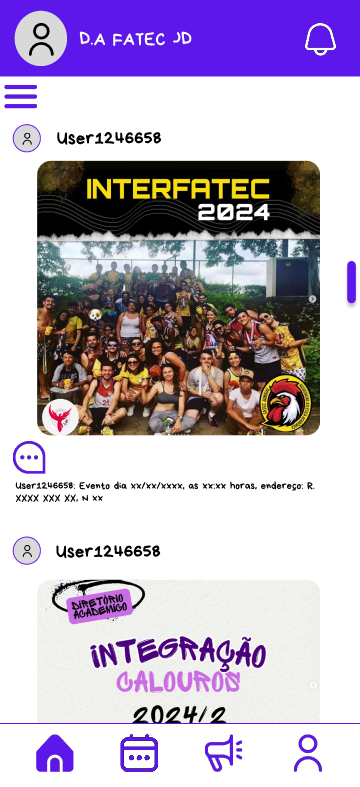

APP Fatec Jundiaí
Descrição: Este projeto foi desenvolvido no quinto semestre. É um site desenvolvido para os alunos da Fatec Jundiaí ficarem por dentro das novidades sobre os eventos da faculdade e da atlética.
Tecnologias utilizadas: React Native.